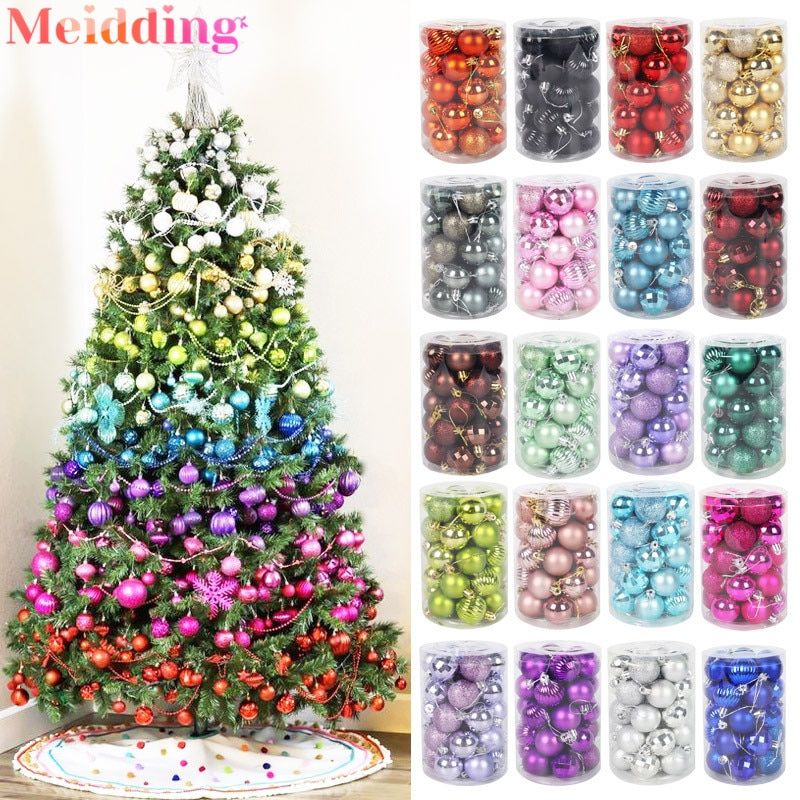
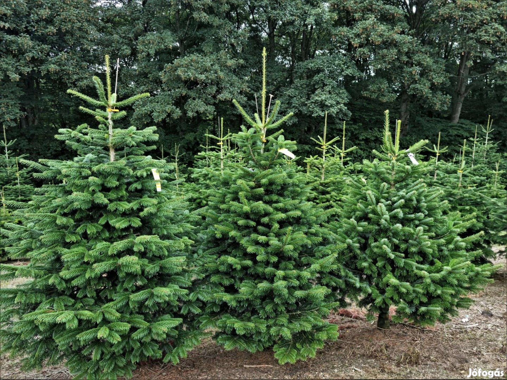

8630 Balatonboglár piactér, tel: 0630 713 6598, e-mail: balazs.rumi23@gmail.com
Megnyitott az első karácsonyi vásárunk!
Mindenkit szeretettel várunk első karácsonyi vásárunkon!
Netán szeretnél egy nagyon jó karácsonyfát, netán szép díszeket, vagy megkóstólnád helyi forraltborunkat?
Akkor Balatonboglár téged vár!
Balatonboglár piactér, december 6-12-ig.

Gyönyörű díszeket és kézműves díszeket tudsz nálunk venni nagyon olcsón
- kézműves díszek
- gömbö
- üveg díszek
Gyönyörű díszeket és kézműves díszeket tudsz nálunk venni nagyon olcsón
- kézműves díszek
- gömbö
- üveg díszek
3000ft-tól

Nálunk kiválló minőségü fenyőket tudsz beszerezni nagyon ólcsón.
- Normand fenyő
- Ezüst fenyő
- Lucfenyő
- Fekete fenyő
Nálunk kiválló minőségü fenyőket tudsz beszerezni nagyon ólcsón.
- Normand fenyő
- Ezüst fenyő
- Lucfenyő
- Fekete fenyő
5000ft-tól
Gyönyörű tiszta égőket vehetsz nálunk.
- Ledes égők
- átlagos égők
- kültéri égők
- beltéri égők
4000ft-tól
szeretnél valami finomat inni?
gyere és kóstold meg forralt borainkat!
meglástd nem ér csalódás
0,3 l/pohár
300ft/pohár
Szeretnél valami finomatakár a forralt borod mellé?
Van finom mézes kalács kínálatunk is próbáld ki bátran!